Słodkie przysmaki serwowane w trakcie podróży pociągiem RegioJet,
idealne na deser lub przekąskę w drodze.
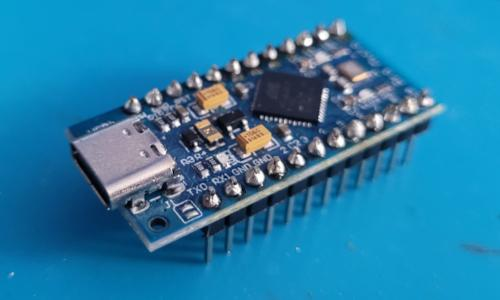
Arduino Pro Micro, idealna, miniaturowa płytka do kompaktowych
projektów DIY i prototypowania, często używana w niestandardowych
kontrolerach.
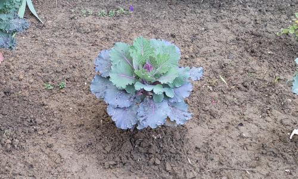
Jesienna dekoracja w miejskiej przestrzeni: efektowna kapusta
ozdobna, wprowadzająca kolor i ciekawą teksturę do ogródka
osiedlowego.
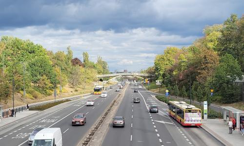
Fragment trasy w Warszawie, przedstawiający skrzyżowanie nowoczesnej
infrastruktury drogowej z zielonymi pasami buforowymi, kluczowy dla
komunikacji autobusowej.
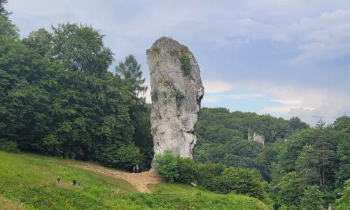
Maczuga Herkulesa w Dolinie Prądnika, imponujący samotny ostaniec
wapienny, wznoszący się nad parkingiem dla turystów.
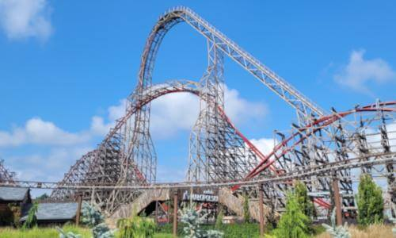
Zadra w Energylandii, imponujący rollercoaster hybrydowy, którego
konstrukcja góruje nad krajobrazem, obiecując niezapomniane emocje.
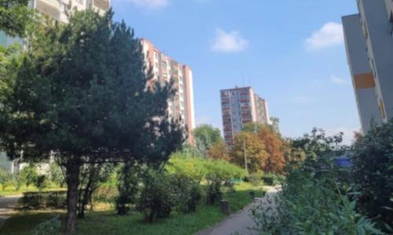
Charakterystyczna zieleń osiedli Mistrzejowic, pełniąca funkcję
rekreacyjną i ekologiczną, kluczowa dla jakości życia w blokach
wielorodzinnych.
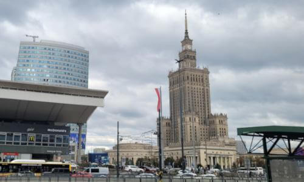
Dynamiczny krajobraz serca Warszawy, ukazujący kontrast
historycznego Pałacu Kultury i Nauki z nowoczesną, przeszkloną
architekturą wieżowców biurowych.
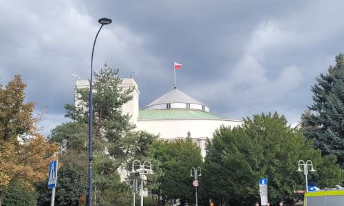
Siedziba polskiego parlamentu, miejsce debat i stanowienia prawa,
widoczna w pochmurny dzień, strzeżona przez służby porządkowe.
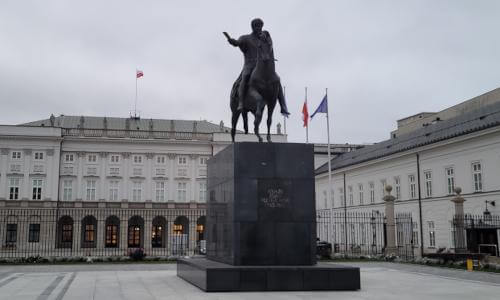
Pomnik Księcia Józefa Poniatowskiego na Krakowskim Przedmieściu,
stojący przed Pałacem Prezydenckim, symbol polskiego patriotyzmu i
historii wojskowości.
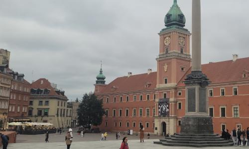
Plac Zamkowy z Kolumną Zygmunta III Wazy, symbol historycznej
Warszawy i popularny punkt spotkań turystów i mieszkańców stolicy.
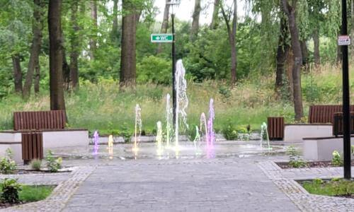
Fontanna miejska, centralny punkt parku, zachęcający do odpoczynku
na jednej z nowych drewnianych ławek.